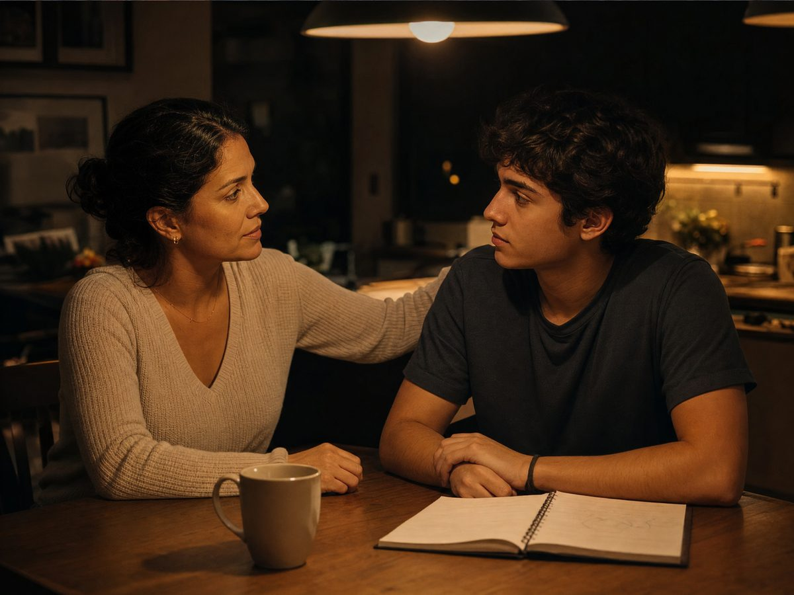

Comfort
Tem talento, mas a disciplina mental ainda falha. Precisa ser cobrado para pagar o preço. Zona de passividade.
É o perfil que mais cresce quando é mentorado.
Preparação mental para o vestibular
A preparação mental que transforma conhecimento em desempenho na hora da prova. Mentoria da Dra. Maria Angélica, com a metodologia que ela usa com atletas de seleção, para a mente que faz o que você estudou aparecer no dia da prova.
Estudei muito e deu branco na hora da prova.9 em cada 10 alunos levantam a mão nas masterclasses.
Sinto que rendo menos do que eu poderia.Sabe o conteúdo e não consegue acessar na hora.
Quanto mais eu estudo, parece que menos eu aprendo.Dez horas de estudo, dez por cento de retenção.
Um branco de algumas horas pode custar mais 365 dias de preparação. Se você se reconheceu, o problema não é falta de estudo. O talento e o estudo já existem. O que falta é a mente preparada para o momento decisivo.
Os 4 perfis de vestibulando
Dez perguntas, pontuação de 10 a 50, quatro perfis. É o teste que a Dra. Maria Angélica aplica nas masterclasses. Não é um rótulo: é um momento, e todos os perfis chegam ao flow quando treinam.
Tem talento, mas a disciplina mental ainda falha. Precisa ser cobrado para pagar o preço. Zona de passividade.
É o perfil que mais cresce quando é mentorado.
Estuda muito, se dedica muito, e o resultado não acompanha. Absorve pouco e se cobra demais.
A média das turmas cai aqui.
Vive de altos e baixos: 10 numa matéria, 2 na outra. O excesso de confiança tira o foco.
Falta consistência, não capacidade.
Segurança, consistência e liderança. Faz a prova em hiperfoco e ajuda os colegas.
No flow não há retrocesso.
Média observada nas turmas: 27 a 30 pontos, perfil Esteira.
O que é a Liga
Um programa que acompanha o vestibulando do início ao último vestibular do ano, com encontros ao vivo, comunidade, acompanhamento semanal e a família dentro do processo. O objetivo não é acumular tarefas: é desenvolver as habilidades que mudam a rotina e aparecem na prova.
Quinzenais, online, em grupo. Gravadas na plataforma, mas o desenvolvimento acontece no ao vivo.
Grupo dos alunos e grupo dos pais, com suporte ativo de segunda a sexta, das 9h às 18h.
Toda segunda, um formulário mostra como cada aluno está. O que aparece ali vira tema da mentoria.
Visualização, respiração, relaxamento, simulação e modelagem, com áudios e pílulas de performance no grupo.
Construído com o autoconhecimento de cada um: o que funciona para você, treinado até virar automático.
Encontro mensal só com os pais e preparação da família na semana da prova.
Nutricionista, preparador físico e fisiologista: performance é um conjunto, não só conteúdo.
Bloco específico no meio e no fim do ano, para chegar no dia da prova em comando.
O método
Flow é o estado de hiperfoco em que a mente acessa tudo o que você estudou, sem diálogo interno, sem branco. Grandes atletas entram nele sem perceber. Na Liga, você aprende a entrar de forma consciente.
Primeiro a identidade, depois o processo, só então o resultado. Você não é a sua nota. Erro e acerto são resultados, e erros são dados.
A rotina de estudo organizada por desempenho: objetivo claro, correção imediata das questões e o equilíbrio entre desafio e habilidade.
Mentais, ambientais, sociais e criativos. Você descobre quais são os seus e monta o ambiente em que a sua mente rende mais.
As habilidades comportamentais que o mundo corporativo chama de soft skills: disciplina, foco, autoliderança, comunicação e gestão do tempo.
Antes, durante e depois: respiração, microfoco em blocos de questões, técnica do elástico, postura de poder e frases de comando.
Autocobrança vira comprometimento. Os pais aprendem a apoiar sem pressionar, e a casa vira ambiente de performance.
Não é sobre estudar mais. É sobre aprender a estudar com inteligência mental, emocional e estratégica, para que todo o esforço apareça no dia da prova.
Dra. Maria Angélica Martins, mentora da Liga dos Aprovados

Para os pais
Não é culpa: é falta de instrução. Os pais querem viver o sonho junto e, sem saber como, viram gatilho de ansiedade. Na Liga, a família entra no processo com a Dra. Andreia Rodrigues, psicóloga com mais de 20 anos com adolescentes e famílias.
Se reconheceu seu filho, não espere o resultado da prova para agir.
Quem conduz
Dra. Maria Angélica Martins é mentora de alta performance, advogada da área desportiva e especialista em psicologia do esporte, neurociência e estado de flow. Fundadora do Instituto Atleta no Flow, trabalha com atletas de seleção brasileira e Champions League, empresários e candidatos a concursos de alto nível. Decidiu focar em adolescentes e jovens porque, nas palavras dela, esse trabalho é uma missão.
Dra. Andreia Rodrigues, psicóloga, mestre em ciências do cuidado em saúde e doutora em saúde pública, com formação em terapia sistêmica, conduz a frente dos pais e o trabalho emocional junto com a Dra. Maria Angélica.
Quem passou pela Liga
"Eu tinha tanta certeza de que não ia passar que já estava arrumando as coisas do cursinho para o próximo ano. Quando começamos o trabalho com a doutora, algumas coisas se desbloquearam na minha cabeça. Eu consegui me manter calma em todas as provas."
"Um divisor de águas. No vestibular anterior eu pensava 'você não fez o suficiente, você não vai passar'. Nesse último, parecia um dia normal, porque eu estava calma e confiante. Ela me ensinou a trocar a autocobrança por compromisso comigo mesma."
"Cheguei muito instável emocionalmente e senti que faltava saber usar uma boa mentalidade na hora da prova. Com o projeto, essa lacuna se fechou. No dia da prova o mental é indispensável."
"No dia a dia o estudo é 90% intelectual, 10% mental. Na hora da prova vira 90% mental. Treinar mentalidade é tão importante quanto treinar o intelecto. Isso vai fazer diferença na sua prova e nas decisões sob pressão pelo resto da vida."
Nota de redação de uma aluna da Liga: de 400 na primeira correção para uma média entre 920 e 960 em três semanas de feedback. "Isso começou a subir depois de eu confiar mais em mim e saber que sou capaz de passar."
Depoimentos exibidos pela própria Dra. nas masterclasses da Liga dos Aprovados.
Antes de entrar
A Dra. é direta nas masterclasses: a mentoria funciona para quem se permite ser mentorado. Vale conferir de que lado você está.
Dúvidas
Teste gratuito · 2 minutos
Dez perguntas, uma nota de 10 a 50 e o seu perfil de vestibulando. No fim, o resultado vai pronto para o WhatsApp da equipe da Liga, que responde com o próximo passo.
De 1 (nunca) a 5 (sempre). Não existe resposta certa: existe o seu momento. O placar sobe enquanto você responde.
Pai ou mãe? Responda pensando no seu filho ou na sua filha, ou pule direto para falar com a equipe.
Seu perfil hoje
Esteira
27 de 50 pontos